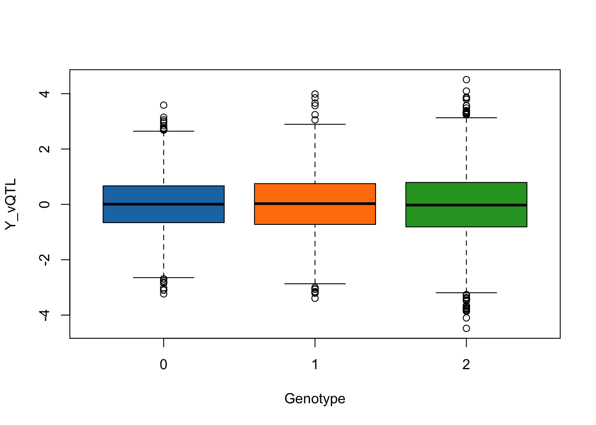

Last updated: 2025-06-10
Checks: 6 1
Knit directory:
SISG2025_Association_Mapping/
This reproducible R Markdown analysis was created with workflowr (version 1.7.0). The Checks tab describes the reproducibility checks that were applied when the results were created. The Past versions tab lists the development history.
The R Markdown is ignored by Git. To know which version of the R
Markdown file created these results, you’ll want to first commit it to
the Git repo. If you’re still working on the analysis, you can ignore
this warning. When you’re finished, you can run
wflow_publish to commit the R Markdown file and build the
HTML.
Great job! The global environment was empty. Objects defined in the global environment can affect the analysis in your R Markdown file in unknown ways. For reproduciblity it’s best to always run the code in an empty environment.
The command set.seed(20230530) was run prior to running
the code in the R Markdown file. Setting a seed ensures that any results
that rely on randomness, e.g. subsampling or permutations, are
reproducible.
Great job! Recording the operating system, R version, and package versions is critical for reproducibility.
Nice! There were no cached chunks for this analysis, so you can be confident that you successfully produced the results during this run.
Great job! Using relative paths to the files within your workflowr project makes it easier to run your code on other machines.
Great! You are using Git for version control. Tracking code development and connecting the code version to the results is critical for reproducibility.
The results in this page were generated with repository version e43c815. See the Past versions tab to see a history of the changes made to the R Markdown and HTML files.
Note that you need to be careful to ensure that all relevant files for
the analysis have been committed to Git prior to generating the results
(you can use wflow_publish or
wflow_git_commit). workflowr only checks the R Markdown
file, but you know if there are other scripts or data files that it
depends on. Below is the status of the Git repository when the results
were generated:
Ignored files:
Ignored: .DS_Store
Ignored: .qodo/
Ignored: analysis/.DS_Store
Ignored: analysis/QG3_Association_Testing_practical_Key.Rmd
Ignored: analysis/QG3_Beyond_Standard_GWAS_practical_Key.Rmd
Ignored: analysis/QG3_CC_Imbalance_practical_Key.Rmd
Ignored: analysis/QG3_Downstream-Analyses_practical_Key.Rmd
Ignored: analysis/QG3_Plink_Population_Structure_practical_Key.Rmd
Ignored: analysis/QG3_Polygenic_Scores_practical_Key.Rmd
Ignored: analysis/QG3_Power-Design_practical_Key.Rmd
Ignored: analysis/QG3_RV_tests_practical_Key.Rmd
Ignored: analysis/QG3_Relatedness_REGENIE_practical_Key.Rmd
Ignored: data/run_regenie.r
Ignored: data/sim_rels_geno.bed
Ignored: exe/
Ignored: lectures/
Ignored: mk_website.R
Ignored: notes.txt
Ignored: tmp/
Untracked files:
Untracked: .mk_website.R.swp
Untracked: _workflowr.yml
Untracked: analysis/.Rhistory
Untracked: analysis/.index.Rmd.swp
Untracked: analysis/QG3_Plink_Population_Structure_practical_Key_cache/
Unstaged changes:
Modified: analysis/QG3_Beyond_Standard_GWAS_practical.Rmd
Note that any generated files, e.g. HTML, png, CSS, etc., are not included in this status report because it is ok for generated content to have uncommitted changes.
These are the previous versions of the repository in which changes were
made to the R Markdown
(analysis/QG3_Beyond_Standard_GWAS_practical_Key.Rmd) and
HTML (docs/QG3_Beyond_Standard_GWAS_practical_Key.html)
files. If you’ve configured a remote Git repository (see
?wflow_git_remote), click on the hyperlinks in the table
below to view the files as they were in that past version.
| File | Version | Author | Date | Message |
|---|---|---|---|---|
| html | 5949e8a | Joelle Mbatchou | 2025-06-10 | Build site. |
Before you begin:
Make sure that R is installed on your computer For this lab, we will use the following R libraries:
library(qqman)This practical aims at illustrating the relationship between tests
for vQTLs and tests for interaction effects. We provide a set of
R commands below to simulate the phenotypes, genotypes and
covariates (at \(M=1000\) SNPs) of
\(N=10,000\) samples and 2 covariates.
We will chose the first of the 10 SNPs to be causal (either QTL, vQTL or
both). We generate two phenotypes which differ based on whether the
causal variant influences the phenotypic variance of the trait directly
or influences the phenotypic mean through GxE effects.
\[ E(Y_{vQTL}) = G\beta,\; Var(Y_{vQTL}) = 1 + G\alpha \]
\[ E(Y_{gxe}) = G\beta + E\gamma + (G\times E)\alpha \]
Copy/Run the following command to enable the
simulate_vqtl_data function in your current R
environment.
set.seed(646909) # For reproducibility
n_individuals <- 10000
n_snps <- 1000
# Function to simulate genotype, phenotype, and covariate data
# Mean effect != 0 corresponds to QTL
# Variance effect != 0 corresponds to vQTL
simulate_vqtl_data <- function(n_individuals = 10000, n_snps = 1000, mean_effect = 1, variance_effect = 2) {
# Simulate genotype data with no LD (0, 1, 2 for SNPs)
genotype_data <- as.data.frame(matrix(sample(0:2, n_individuals * n_snps, replace = TRUE),
nrow = n_individuals, ncol = n_snps))
colnames(genotype_data) <- paste0("SNP", 1:n_snps)
# Simulate environmental covariate (e.g., smoking status)
covariate_data <- data.frame(
environment = factor(sample(c("non-smoker", "smoker"), n_individuals, replace = TRUE), levels = c("non-smoker", "smoker")),
age = runif(n_individuals, 40,60)
)
# Approach 1: Modeling SNP effect in the phenotypic variance
phenotype_variance <- rnorm(n_individuals,
mean = mean_effect * genotype_data$SNP1,
sd = 1 + variance_effect * genotype_data$SNP1)
# Approach 2: Modeling GxE effect in the phenotypic mean
phenotype_gxe <- rnorm(n_individuals,
mean = mean_effect * genotype_data$SNP1 +
variance_effect * as.numeric(covariate_data$environment) *genotype_data$SNP1,
sd = 1)
# Combine phenotypes into a data frame
phenotype_data <- data.frame(Y_vQTL = phenotype_variance, Y_gxe = phenotype_gxe)
# Return a list of data frames
return(list(genotype = genotype_data, phenotype = phenotype_data, covariate = covariate_data))
}The simulate_vqtl_data function has 4 input parameters:
n_individuals (sample size), n_snps (number of
SNPs tested), mean_effect (the effect size of the causal
variant on the phenotypic mean), variance_effect (the
effect size of the causal variant on the phenotypic variance
for phenotype Y1 OR the size of the GxE interaction effect
for phenotype Y2).
Let’s run a first data set where the causal variant has no effect on
the trait, i.e., mean_effect = 0 and
variance_effect = 0.
simulated_data <- simulate_vqtl_data(mean_effect = 0, variance_effect = 0)Note: you can use str(simulated_data) to see a snipper
of what’s returned by the simulate_vqtl_data function.
We can visualize the phenotype distribution across genotype groups for SNP1.
trait_name <- "Y_vQTL"
boxplot(phenotype[,trait_name] ~ genotype[,"SNP1"], data = simulated_data,
xlab = "Genotype",
ylab = trait_name,
col = c("#1f77b4", "#ff7f0e", "#2ca02c"))
We use of lm() in R to assess phenotypic mean
differences across genotypes for each variant.
Copy/Run the following command to enable the
lm_test function in your current R
environment.
# This function applies linear regression test to each of the simulated variant for a given trait
# trait_name = {"Y_vQTL", "Y_gxe"}
lm_test <- function(data, trait_name) {
p_values <- rep(NA, n_snps)
names(p_values) <- colnames(data$genotype)
for(i in 1:n_snps){
p_values[i] <- summary(lm(phenotype[, trait_name] ~ genotype[,i], data = data))$coef[2,4]
}
# Return the p-values
return(p_values)
}Based on the parameters used in the simulation, would we expect significant result when testing the causal SNP1?
First we do it for trait “Y_vQTL” (do it again on your own for the other trait “Y_gxe”)
trait_name <- "Y_vQTL"
qtl_pvals <- lm_test(data = simulated_data, trait_name = trait_name)
qtl_pvals[1] # P-value of the causal SNP1 SNP1
0.2942319 You can make a qq plot to visualize the p-values highlighting the causal SNP1.
Copy/Run the following command to enable the
plot_qq function in your current R
environment.
plot_qq <- function(pvals){
qq(pvals)
points(-log10(ppoints(n_snps)[rank(pvals)[1]]), -log10(pvals[1]),
col = "blue", pch = 19, cex = 1.5)
}plot_qq(qtl_pvals)
| Version | Author | Date |
|---|---|---|
| 5949e8a | Joelle Mbatchou | 2025-06-10 |
We make use of Levene’s test to assess phenotypic variance differences across genotypes for each variant.
Copy/Run the following command to enable the
levene_test function in your current R
environment.
# This function applies levene test to each of the simulated variant for a given trait
# trait_name = {"Y_vQTL", "Y_gxe"}
levene_test <- function(data, trait_name) {
p_values <- rep(NA, n_snps)
names(p_values) <- colnames(data$genotype)
for(i in 1:n_snps){
# Ensure the genotype is a factor
factor_geno <- as.factor(data$genotype[,i])
# Calculate the absolute deviations from the group means
abs_dev <- abs(data$phenotype[, trait_name] - ave(data$phenotype[, trait_name], factor_geno, FUN = mean))
# Perform an ANOVA on the absolute deviations
p_values[i] <- summary(aov(abs_dev ~ factor_geno))[[1]]$`Pr(>F)`[1]
}
# Return the p-values
return(p_values)
}Based on the parameters used in the simulation, would we expect significant result when testing the causal SNP1?
trait_name <- "Y_vQTL"
levene_pvals <- levene_test(data = simulated_data, trait_name = trait_name) # Levene's test for variance differences
levene_pvals[1] # P-value of the causal SNP1 SNP1
0.2343523 You can make a qq plot to visualize the p-values highlighting the causal SNP1.
plot_qq(levene_pvals)
| Version | Author | Date |
|---|---|---|
| 5949e8a | Joelle Mbatchou | 2025-06-10 |
We again use of lm() in R but this time also include an
interaction term with the environment.
Copy/Run the following command to enable the
gxe_test function in your current R
environment.
gxe_test <- function(data, trait_name){
pvals <- rep(NA, n_snps)
names(pvals) <- colnames(data$genotype)
for(i in 1:n_snps){
pvals[i] <- summary(lm(phenotype[, trait_name] ~ genotype[,i]*covariate$environment, data = data))$coef[4,4]
}
return(pvals)
}trait_name <- "Y_vQTL"
gxe_pvals <- gxe_test(data = simulated_data, trait_name = trait_name)
gxe_pvals[1] # P-value of the causal SNP1 SNP1
0.4361276 You can make a qq plot to visualize the p-values highlighting the causal SNP1.
plot_qq(gxe_pvals)
| Version | Author | Date |
|---|---|---|
| 5949e8a | Joelle Mbatchou | 2025-06-10 |
Modify mean_effect and variance_effect to
simulate different scenarios:
variance_effect = 0).simulated_data <- simulate_vqtl_data(mean_effect = 0.1, variance_effect = 0)
trait_name <- "Y_vQTL"
boxplot(phenotype[,trait_name] ~ genotype[,"SNP1"], data = simulated_data,
xlab = "Genotype",
ylab = trait_name,
col = c("#1f77b4", "#ff7f0e", "#2ca02c"))
| Version | Author | Date |
|---|---|---|
| 5949e8a | Joelle Mbatchou | 2025-06-10 |
qtl_pvals <- lm_test(data = simulated_data, trait_name = trait_name)
plot_qq(qtl_pvals)
| Version | Author | Date |
|---|---|---|
| 5949e8a | Joelle Mbatchou | 2025-06-10 |
levene_pvals <- levene_test(data = simulated_data, trait_name = trait_name)
plot_qq(levene_pvals)
| Version | Author | Date |
|---|---|---|
| 5949e8a | Joelle Mbatchou | 2025-06-10 |
gxe_pvals <- gxe_test(data = simulated_data, trait_name = trait_name)
plot_qq(gxe_pvals)
| Version | Author | Date |
|---|---|---|
| 5949e8a | Joelle Mbatchou | 2025-06-10 |
mean_effect = 0).simulated_data <- simulate_vqtl_data(mean_effect = 0, variance_effect = 0.1)
trait_name <- "Y_vQTL"
boxplot(phenotype[,trait_name] ~ genotype[,"SNP1"], data = simulated_data,
xlab = "Genotype",
ylab = trait_name,
col = c("#1f77b4", "#ff7f0e", "#2ca02c"))
| Version | Author | Date |
|---|---|---|
| 5949e8a | Joelle Mbatchou | 2025-06-10 |
qtl_pvals <- lm_test(data = simulated_data, trait_name = trait_name)
plot_qq(qtl_pvals)
| Version | Author | Date |
|---|---|---|
| 5949e8a | Joelle Mbatchou | 2025-06-10 |
levene_pvals <- levene_test(data = simulated_data, trait_name = trait_name)
plot_qq(levene_pvals)
| Version | Author | Date |
|---|---|---|
| 5949e8a | Joelle Mbatchou | 2025-06-10 |
gxe_pvals <- gxe_test(data = simulated_data, trait_name = trait_name)
plot_qq(gxe_pvals)
| Version | Author | Date |
|---|---|---|
| 5949e8a | Joelle Mbatchou | 2025-06-10 |
simulated_data <- simulate_vqtl_data(mean_effect = 0.1, variance_effect = 0.2)
trait_name <- "Y_vQTL"
boxplot(phenotype[,trait_name] ~ genotype[,"SNP1"], data = simulated_data,
xlab = "Genotype",
ylab = trait_name,
col = c("#1f77b4", "#ff7f0e", "#2ca02c"))
| Version | Author | Date |
|---|---|---|
| 5949e8a | Joelle Mbatchou | 2025-06-10 |
qtl_pvals <- lm_test(data = simulated_data, trait_name = trait_name)
plot_qq(qtl_pvals)
| Version | Author | Date |
|---|---|---|
| 5949e8a | Joelle Mbatchou | 2025-06-10 |
levene_pvals <- levene_test(data = simulated_data, trait_name = trait_name)
plot_qq(levene_pvals)
| Version | Author | Date |
|---|---|---|
| 5949e8a | Joelle Mbatchou | 2025-06-10 |
gxe_pvals <- gxe_test(data = simulated_data, trait_name = trait_name)
plot_qq(gxe_pvals)
| Version | Author | Date |
|---|---|---|
| 5949e8a | Joelle Mbatchou | 2025-06-10 |
gxe_pvals <- gxe_test(data = simulated_data, trait_name = "Y_gxe")
plot_qq(gxe_pvals)
| Version | Author | Date |
|---|---|---|
| 5949e8a | Joelle Mbatchou | 2025-06-10 |
sessionInfo()R version 4.3.0 (2023-04-21)
Platform: aarch64-apple-darwin20 (64-bit)
Running under: macOS 14.7.4
Matrix products: default
BLAS: /Library/Frameworks/R.framework/Versions/4.3-arm64/Resources/lib/libRblas.0.dylib
LAPACK: /Library/Frameworks/R.framework/Versions/4.3-arm64/Resources/lib/libRlapack.dylib; LAPACK version 3.11.0
locale:
[1] en_US.UTF-8/en_US.UTF-8/en_US.UTF-8/C/en_US.UTF-8/en_US.UTF-8
time zone: America/New_York
tzcode source: internal
attached base packages:
[1] stats graphics grDevices utils datasets methods base
other attached packages:
[1] qqman_0.1.8
loaded via a namespace (and not attached):
[1] jsonlite_1.8.5 compiler_4.3.0 highr_0.10 promises_1.2.0.1
[5] Rcpp_1.0.10 stringr_1.5.0 git2r_0.32.0 later_1.3.1
[9] jquerylib_0.1.4 yaml_2.3.7 fastmap_1.1.1 R6_2.5.1
[13] workflowr_1.7.0 knitr_1.43 MASS_7.3-58.4 tibble_3.2.1
[17] rprojroot_2.0.3 bslib_0.5.0 pillar_1.9.0 rlang_1.1.1
[21] utf8_1.2.3 cachem_1.0.8 calibrate_1.7.7 stringi_1.7.12
[25] httpuv_1.6.11 xfun_0.39 fs_1.6.2 sass_0.4.6
[29] cli_3.6.1 magrittr_2.0.3 digest_0.6.31 rstudioapi_0.14
[33] lifecycle_1.0.3 vctrs_0.6.2 evaluate_0.21 glue_1.6.2
[37] whisker_0.4.1 fansi_1.0.4 rmarkdown_2.22 tools_4.3.0
[41] pkgconfig_2.0.3 htmltools_0.5.5